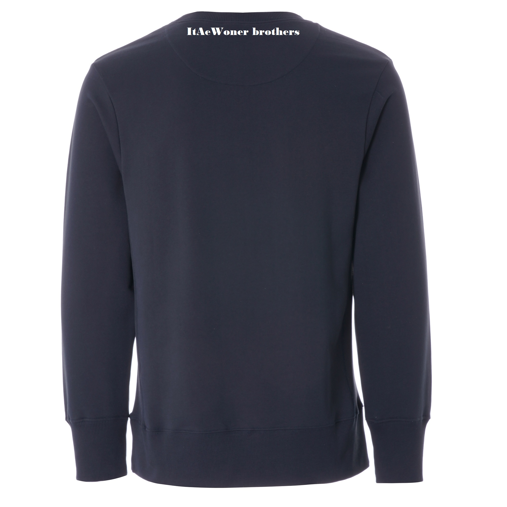

- HTML
- CSS
- JavaScript
'Codrinking Space' Project
1. Codrinking Space의 의의
1) 다양한 사람들이 술을 마시며 만남을 가지고 친목을 다지는 공간의 개념
2) Coworking Space에서 유래
2. 목적
1) Itaewoner Brothers 첫번째 공식 프로젝트. IWB의 아지트로 프라이빗하게 운영하고자 함에 있다.
2) 모든 솔로들과 외로운 사람들의 만남을 추진하고 그로 인한 주류매출을 통하여 수익을 창출한다.
3. 운영방법
1) 공식 홈페이지를 개설한다. 회원관리하기 위함이며 단골고객이나 운영시간, 매출 데이터등을 분석한다.
2) 모든 고객은 인증 절차를 거친 회원가입을 통하여 가입 후 업장 이용이 가능하다.
3) 금, 토, 일요일에만 업장을 운영하며 평일에는 IWB멤버들(투자한멤버)에 한해서 업장 사용이 무제한 가능하다.
단 임명된 관리자에게 이용시간에 대해 사전에 허락받는다.
4) 코드링커들(프로젝트에 참여한 멤버를 칭함, 향후 등업을 통하여 고객이 권한을 가질 수도 있음)이 스케쥴 조정을 통하여 교대로 업장을 운영한다.
5) 프라이빗하게 운영하는 만큼 분위기를 흐리거나 진상인 고객들은 철저하게 입장을 거부한다.
4. 투자비용
1) 코드링커들은 모두 투자에 참여한다. 총비용에서 인원수대로 나눠 동일한 금액을 투자한다.
2) 투자에 참여하고자 하는 IWB멤버들에게는 100만원 단위로 투자금을 지원받으며 연6%의 이자또는 카드매출의 0.2%를 매월 분할해서 수익금으로 지급한다. 투자금은 중도에 뺄수 없으며 폐업시에 원금을 전액상환한다.
